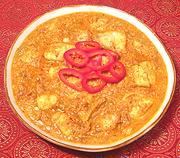

|
Fish Curry, GoaIndia - Goa - Meen Goa | ||||
| Serves: Effort: Sched: DoAhead: |
3 w/rice *** 1-1/2 hrs Yes |
Delicious and fiery. Goa is the port through which Portuguese sailors introduced chili peppers to India. Recipes labeled "Goa" tend to be hot, and this one doesnt disappoint. If you haven't made peace with the Chili Gods, use caution. | |||
|
1-1/2 1/4 1/2 3 4 2 ------ 3 2 3/4 5 15 1 1 1 5 1/2 ------ 2 1 ------ |
# c t oz oz --- T cl in oz T t t oz t --- T c --- |
Fish (1) Lemon Juice Salt Onion Tomatoes Chilis, green (2) -- Coconut Paste Tamarind (3) Garlic Ginger root Coconut grated (4) Chilis, dry (5) Coriander seed Cumin seed Turmeric Coconut Milk Salt ---------- Oil Water -- Garnish Cilantro Leaves |
Prep - (1 hr / 45 min work)
|
imf_fishmm1 100914 imp27 - www.clovegarden.com
©Andrew Grygus - agryg@aaxnet.com - Linking to and
non-commercial use of this page is permitted.